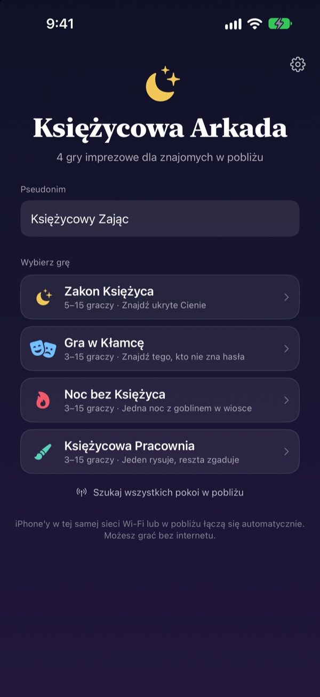
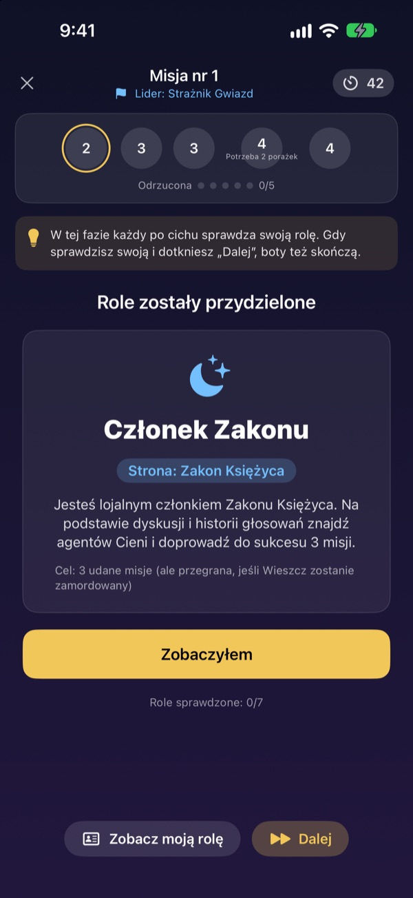
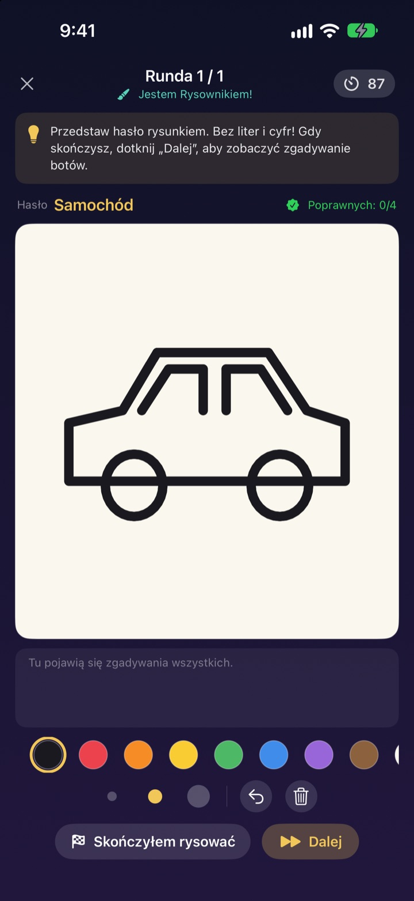
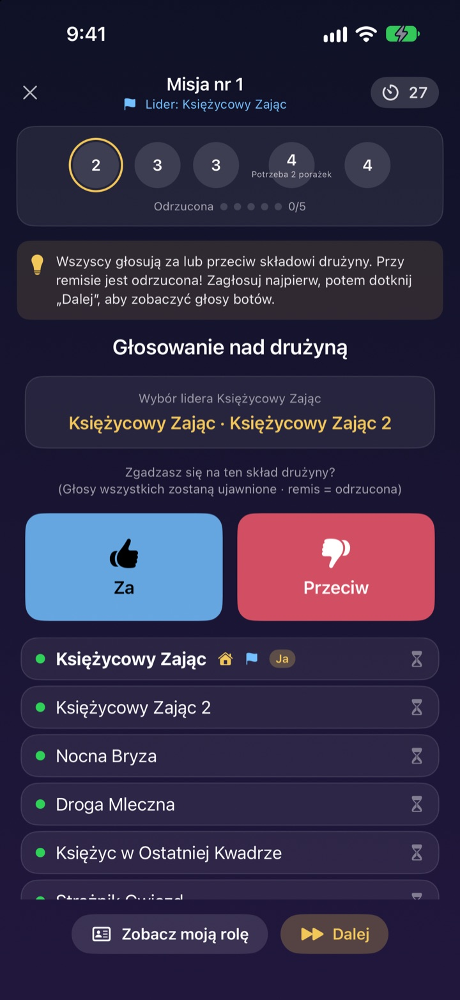

Wszyscy są?
Wyciągajcie iPhone’y.
Jedna osoba zakłada pokój, a wszyscy w pobliżu dołączają w kilka sekund. Role i tajne słowa widać tylko na własnym ekranie: bez kart i bez nikogo, kto musi siedzieć z boku jako prowadzący.
Wszystkie gry za darmo. Bez konta i bez internetu.

Zagraj rundę w Kłamcę
Wyobraź sobie pięć iPhone’ów na stole i stuknij w każdy po kolei, żeby zerknąć. Tylko jedna osoba nie zna słowa. Możecie też podawać sobie ekran.
Wszyscy są, ale nie wiadomo, w co grać
Wieczór gier, weekend na działce, święta z rodziną. W Mafię ktoś musi wypaść z gry i prowadzić, a złożone karteczki nigdy nie są do końca tajne. W domku ze słabym Wi-Fi gry online też odpadają. W Księżycowej Arkadzie prowadzenie, rozdanie ról i połączenie biorą na siebie iPhone’y.
Twoja rola jest tylko na twoim ekranie
Po starcie każdy iPhone dostaje swoją rolę lub słowo. Bez rozdawania kart i bez „miasto zasypia”.
Podczas głosowania widać tylko, kto już zagłosował. Kto głosował na kogo, zostaje tajemnicą do odkrycia.

Cztery gry na każdą ekipę
W Grze w Kłamcę wygrywa gadane, w Zakonie Księżyca tropicie Cienie misjami i głosowaniami, w Nocy bez Księżyca szukacie Goblina w jedną noc, a w Księżycowej Pracowni jedna osoba rysuje, a reszta zgaduje.
Zakon Księżyca od 5 osób, pozostałe od 3, wszystkie do 15.

Nowa gra? Nauczysz się w kilka minut
Każda gra ma tryb Jak grać, w którym rozgrywasz rundę z botami krok po kroku. Przeczytaj wskazówkę u góry i stuknij Dalej.
Gdy aplikacja się zamknie albo zerwie się połączenie, stuknij Kontynuuj na ekranie głównym i wracasz do tej samej rundy.

Zacznij w trzech krokach
- 1
Pseudonim i gra
Wszyscy otwierają aplikację, wpisują pseudonim i wybierają grę.
- 2
Utwórz pokój lub dołącz
Jedna osoba tworzy pokój, reszta znajduje go w Szukaj pokoi w pobliżu.
- 3
Gospodarz startuje
Gdy wszyscy są w środku, gospodarz stuka Rozpocznij grę. Resztą zajmie się aplikacja.
Cztery gry
- Gra w Kłamcę · 3–15 osób
- Wszyscy dostają to samo słowo oprócz jednej osoby. Po kolei je opisujecie, a potem głosujecie na Kłamcę. Jeśli złapany Kłamca odgadnie słowo, i tak wygrywa.
- Zakon Księżyca · 5–15 osób
- Zdemaskujcie Cienie ukryte w Zakonie. Przywódca wybiera drużynę, wszyscy głosują za lub przeciw, a drużyna potajemnie zagrywa sukces albo porażkę. Wygrywa strona, która pierwsza zdobędzie trzy misje.
- Noc bez Księżyca · 3–15 osób
- Jedna noc i Goblin ukryty we wsi. Nocą Szaman, Nocny złodziej i Psotnik działają po cichu. O świcie jest dyskusja i tylko jedno głosowanie, żeby znaleźć Goblina.
- Księżycowa Pracownia · 3–15 osób
- Jedna osoba rysuje słowo, reszta zgaduje na czacie. Im szybciej zgadniesz, tym więcej punktów, a rysujący punktuje za każdą trafną odpowiedź.
Każdą grę można najpierw wypróbować samemu z botami w trybie Jak grać.
Częste pytania
Nie widzę pokoju.
Sprawdź, czy gospodarz i gracze są w tej samej sieci Wi-Fi albo blisko siebie. Żeby znaleźć urządzenia w pobliżu, Księżycowa Arkada musi być włączona w Ustawieniach ▸ Prywatność i ochrona ▸ Sieć lokalna. Z włączonymi Wi-Fi i Bluetooth połączenie jest najstabilniejsze.
Czy muszę zezwolić na dostęp do sieci lokalnej?
Tak, dzięki temu aplikacja znajduje iPhone’y w pobliżu i łączy się z nimi. Jeśli stuknięto Nie pozwalaj, włącz to ponownie w Ustawieniach ▸ Prywatność i ochrona ▸ Sieć lokalna.
Połączenie zerwało się w trakcie gry.
Otwórz aplikację ponownie i stuknij Kontynuuj na ekranie głównym, aby wrócić do tego samego pokoju i rundy. Rola i punkty zostają. Jeśli długo nie da się połączyć, dołącz jeszcze raz z listy pokoi.
Ktoś nie odpowiada i gra stanęła.
Gospodarz może w każdej chwili usunąć nieaktywnego gracza, a gra przelicza wynik z pozostałymi i toczy się dalej. Tryb gospodarza GM pozwala też pominąć zablokowany etap.
Ile osób potrzeba?
Zakon Księżyca wymaga 5 osób. Gra w Kłamcę, Noc bez Księżyca i Księżycowa Pracownia startują od 3. Wszystkie do 15. Za mało ludzi? Poznajcie zasady z botami w trybie Jak grać.
Czy potrzebny jest internet albo konto?
Nie. Bez rejestracji, logowania i internetu. iPhone’y w pobliżu łączą się bezpośrednio, a dane gry nigdy nie trafiają na serwer.
Czy mogę najpierw zagrać sam?
Tak. Wybierz grę, a potem Jak grać (ćwiczenie z botami). Boty wejdą do pokoju, a ty rozegrasz całą rundę krok po kroku.
Jak zgłosić błąd albo podsunąć pomysł?
Prosto z aplikacji: Ustawienia (koło zębate) ▸ Pomoc, albo mailem na adres poniżej. Odpowiemy najszybciej, jak się da.
Błędy, pomysły i inne sprawy: napisz na mizzking75@gmail.com.